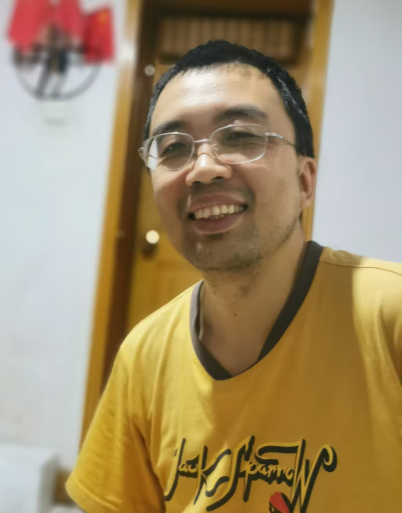

I was the founder and CEO of Ratidar Technologies LLC. Before my startup adventure, I worked for Funplus as the AI Lab Director. I had worked for IT companies for over 14 years. My expertise lied mostly in data mining and machine learning. I developed products such as Douban Group Recommendation, Lenovo E-shop Recommendation, Netease Jokes, Funplus Game Prop Recommendation, etc. I published 45 papers at international conferences and journals with 1 Best Paper Award and 4 Best Oral Presentation Awards
My team won 3rd place (Gold Medal) in 2006 ACM/ICPC Rocky Mountain Regional. I won 2nd place (Special Prize) in Shaan Xi Province, China in NECCS 2004 and obtained a Bronze Medal (Third Prize) in the National Final (Oral English Competition) of NECCS 2004. I was No.1 in the English Test (Science/Engineering Track) of Jinan City, Shandong Province on the College Entrance Exam of China in 2003.
I graduated from University of Utah in 2010 (Master in Computing / Computer Science) and 2008 (Bachelor of Science / Computer Science, Mathematics with a minor in Economics). I also hold a part-time MBA degree from University of International Business and Economics (2017).
Awards